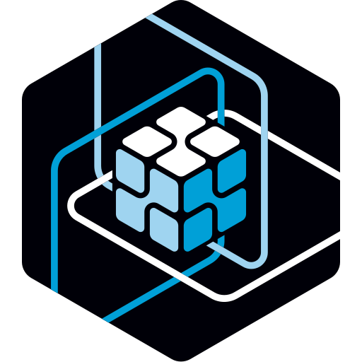

WORK-PAK-495-192-4T). Комплекс представляет собой готовое решение «под ключ», объединяющее защищённое хранилище, аналитическое ядро двойной записи, встроенные офисные редакторы и локальную мультиагентную систему искусственного интеллекта, функционирующую полностью внутри закрытого контура предприятия без выхода в сеть Интернет и без передачи данных во внешние облака.
private: true («данные не покидают сервер») на уровне программного кода блокирует любые внешние сетевые вызовы, исключая риск утечки коммерческой и служебной тайны..xlsx/.xls/.csv/.ods): субагент analyst сопоставляет тысячи строк спецификаций и калькуляций, выявляя завышение расценок относительно нормативов и прошлых периодов, задвоение объёмов, скрытые наценки и арифметические расхождения..docx/.rtf/.pdf): поиск нетипичных условий, односторонних финансовых рисков, штрафных диспропорций и отклонений от регламентов Общества.integrator): прямая выверка первичных документов и актов с фактическими проводками и платежами по OData..eml).<untrusted>.taint) гарантирует, что скрытые инструкции внутри проверяемого документа не смогут перехватить управление агентом или модифицировать данные.history/ (с функцией пошагового отката undo).ai/skills) и используются для локального дообучения моделей (LoRA / GRPO) прямо на комплексе.| № | Составная часть комплекта | Технические характеристики и функциональный состав |
|---|---|---|
| 1 | Аппаратная платформа ПАК Серверная ИИ-станция с единой памятью |
|
| 2 | Системное и прикладное ПО ODANT-WORK Реестр ПО Минцифры РФ № 3505 от 03.05.2017 |
|
| 3 | Предустановленный локальный стек моделей ИИ Контуры /MODELS/Halogen и /MODELS/Local |
|
| 4 | Пользовательские лицензии Бессрочные (вечные) права |
|
| 5 | Техническая поддержка и гарантия Уровень Enterprise 24/7 |
|
| Артикул (SKU) | Наименование поставляемого комплекта | Кол-во | Стоимость, руб. |
|---|---|---|---|
WORK-PAK-495-192-4T |
Программно-аппаратный комплекс ODANT-WORK (Базовый комплект) Серверная ИИ-станция (AMD Ryzen™ AI Max+ PRO 495, 192 ГБ RAM, 4 ТБ NVMe SSD), предустановленная платформа ODANT-WORK (Реестр ПО № 3505 от 03.05.2017), локальный мультимодальный стек ИИ, 10 бессрочных конкурентных лицензий + 1 год поддержки Enterprise 24/7 |
1 компл. | 5 000 000,00 |
| ИТОГО СТОИМОСТЬ БАЗОВОГО КОМПЛЕКТА «ПОД КЛЮЧ»: | 5 000 000,00 ₽ | ||
BOSS / USER), включение закрытого режима private: true и инструктаж специалистов Отдела экономической безопасности.